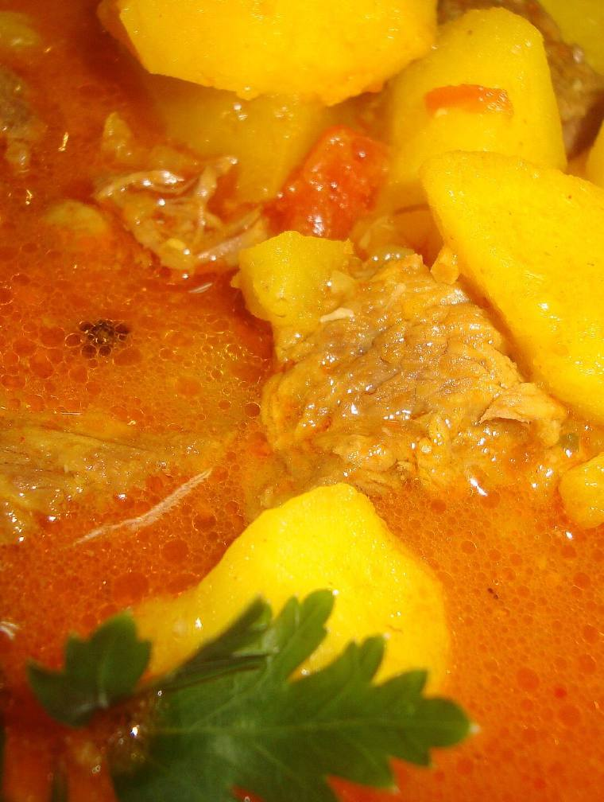

Cuisine espagnole

Cuisine espagnole
Guiso de carne con patatas
Ragoût de viande aux pommes de terre
Préparation : 20 min
Cuisson : 1 h 40
Ingrédients (pour 4 personnes)
- 500 g d’échine de porc en cubes
- 1 kg de pommes de terre
- 1 oignon
- 4 gousses d’ail
- 1 tomate
- 25 cl de vin de solera (Xérès ou Montilla)
- 20 cl de bouillon
- 1 feuille de laurier
- persil, huile d’olive, sel, poivre
Quantités adaptées. Les temps de cuisson ne sont pas recalculés.
- Faire fondre oignon, ail, tomate et persil dans l’huile, puis mixer avec vin et bouillon.
- Verser sur la viande en cocotte, ajouter laurier, sel, poivre, et de l’eau juste à hauteur.
- Mijoter environ 1 heure, jusqu’à ce que la viande soit tendre.
- Ajouter les pommes de terre en morceaux cassés au couteau, de l’eau à hauteur, pas plus.
- Cuire encore 25 à 30 minutes et laisser reposer un instant.
D’après une recette de José Manuel Monje, Universidad Pablo de Olavide, Séville. Traduit et reformulé, bouillon à la place du cube, durées précisées.